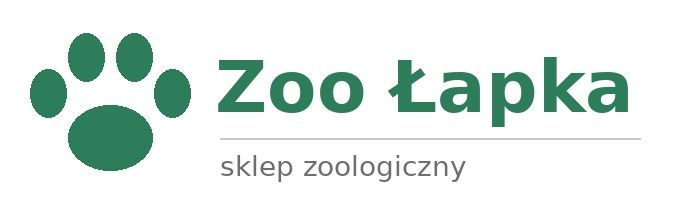

Zoo Łapka to sskłep zoologiczny dla wszystkich, którzy kochają zwierzęta. U nas znajdziesz wszystko, czego potrzebuje Twój pies, kot, ryna, chomik czy papuga Stawiamy na dobrą jakość i przyjazną obsługę.

Nasza oferta liczy ponad 2000 produktów. Powierzchnia sklepu to 150 m2, a woda w akwariach ma temperaturę 24oC. Karma Premium kosztuje od 29,99 zł za 1 kg. Nasi sprzedawcy chętnie doradzą, jak urządzić idealny kącik dla Twojego domowego zwierza, jak dbać o jego zdrowie i co podawać na co dzień.
Zapraszamy codziennie od 9:00 do 19:00!
Każdy klient otrzymuje rabat 10% na pierwsze zakupy.